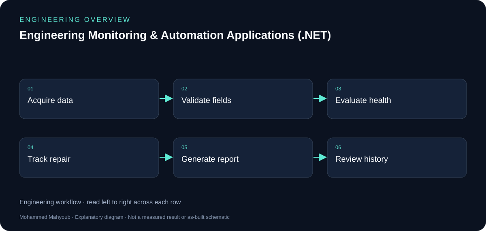
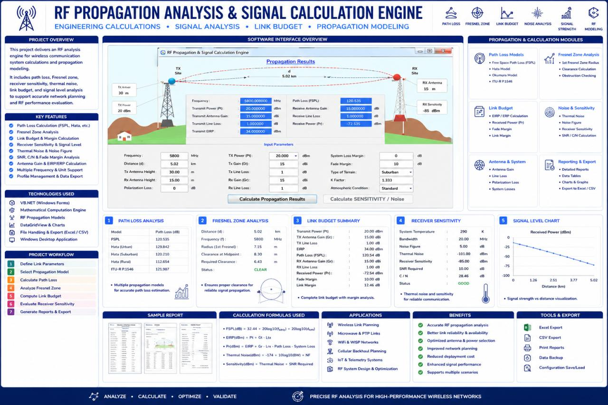
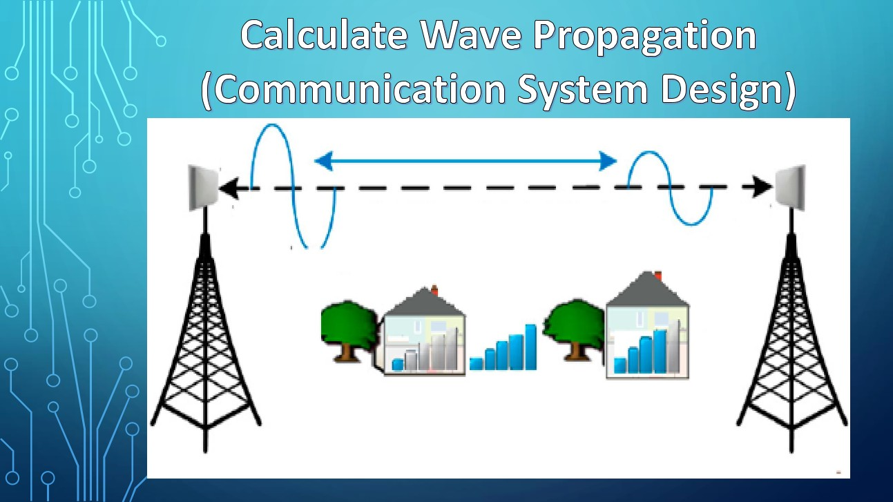
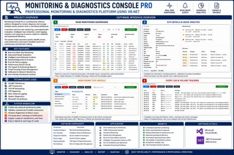

Desktop Software · Engineering Automation
Engineering Monitoring & Automation Applications (.NET)
Developed VB.NET desktop applications and engineering tools for system monitoring, service documentation, repair tracking, operational reporting, device integration, and RF analysis.
System overview

Author
Mohammed Mahyoub
Scope
Structured data management, diagnostics, service records, maintenance workflows, technical calculations, and exportable reports.
Example
Monitoring & Diagnostics Console — a WinForms dashboard for multi-site system monitoring, real-time diagnostics, automated health evaluation, issue tracking, and technical reporting.
RF tools
Calculators for path loss, Fresnel-zone clearance, receiver sensitivity, thermal noise, and RF propagation modelling.
Engineering rationale
Operational monitoring and service records
The application portfolio includes live system diagnostics and service-documentation workflows. The service-management source image shows device records, repair details, warranty/calibration fields, search and reporting. These functions should be explained as related applications rather than assumed to be one identical screen.
Engineering calculation tools
The RF tool covers path loss, receiver sensitivity, thermal noise and link budget. A separate planning view covers line-of-sight and Fresnel clearance. Inputs, units and assumptions are essential to interpreting a calculator result.
Public evidence
The gallery reuses project media already attached to LinkedIn. It provides visual evidence of the applications; the diagrams added here explain responsibilities and workflow. Application source code and database exports are not included in this repository.

Evidence and validation
Suggested evidence checks for reviewing this work. These are not claimed pass results.
- Input validation and unit handling
- Device health versus stale/unreachable data
- Service record create/search/report workflow
- Calculator result with input assumptions
Source gallery
Figures from the existing project repository, public notebook outputs, or corresponding LinkedIn project media. Original screenshots and existing explanatory figures retain their source context.






